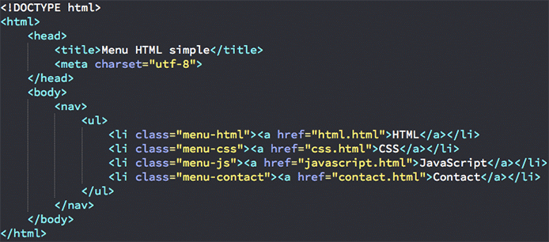

Du point de vue du balisage, HTML 5 inaugure de nouveaux éléments pour de nouveaux
usages, afin de répondre aux besoins grandissants des internautes.
• Les premiers permettent d’ajouter une valeur sémantique aux blocs génériques
précédemment définis par les éléments div et span. C’est le cas notamment de
article, aside, footer, header, section et nav.
• Les suivants apportent de nouvelles fonctionnalités aux pages web, c’est le cas
notamment de audio et video.
Différences depuis HTML 4.01 et XHTML 1.x
Outre la transformation de la philosophie de développement autour de HTML 5,
voici un résumé des différences notables :
• de nouvelles règles d’analyse syntaxique ;
• la possibilité d’utiliser SVG ou MathML au sein de HTML ;
• les nouveaux éléments : article, aside, audio, canvas, command, datalist,
details, embed, figcaption, figure, footer, header, hgroup, keygen, mark,
meter, nav, output, progress, rp, rt, ruby, section, source, summary, time,
video, wbr ;
EXEMPLE
